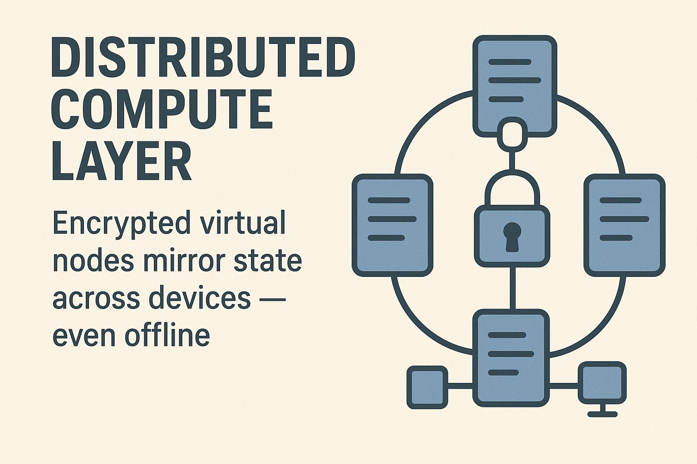
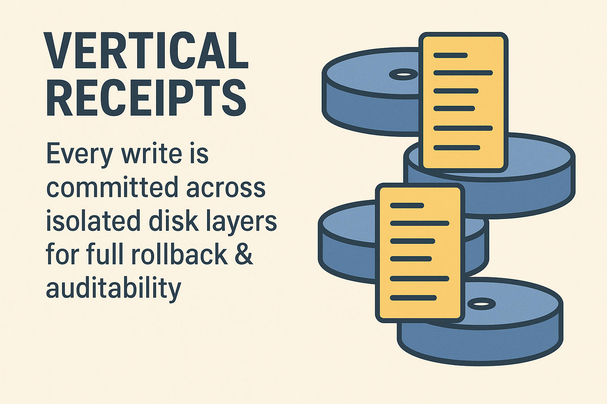
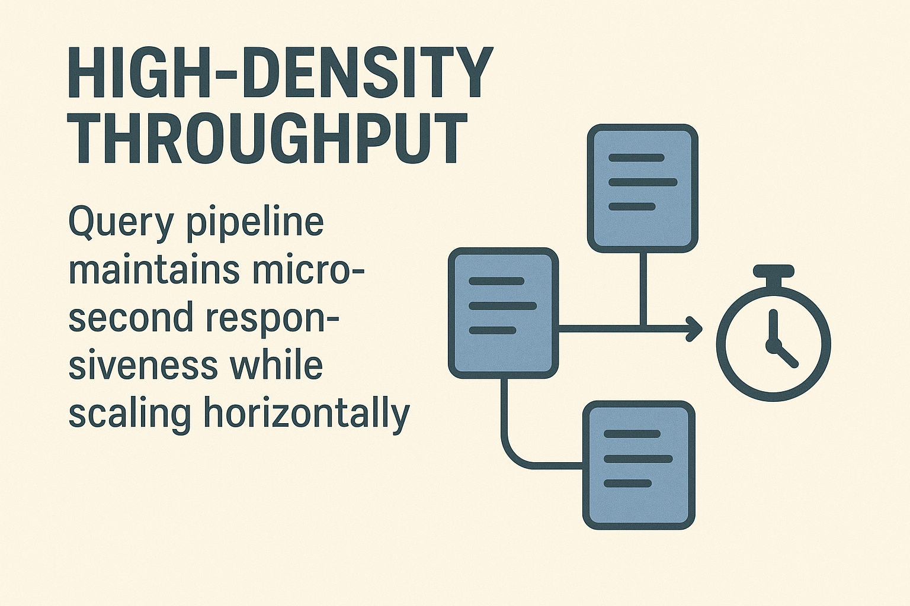

shadeDB
The Autonomous High‑Velocity Database
The ultra-fast, self-optimizing Database‑as‑a‑Service engineered for developers who demand more from speed, autonomy, and intelligence.
What Is shadeDB?
shadeDB answers a simple question: what happens when a database stops trying to be everything… and focuses on pure speed, intelligence, and autonomy?
Originally developed during the evolution of shadecreed, it began as a lightweight engine designed to overcome JSON’s inability to handle duplicate keys. That evolved into a custom data engine capable of storing data in a field-value structure efficiently and retrieving them with near‑zero latency.
Why Developers Choose shadeDB
Ultra‑Low Latency — 0.3ms queries using under 1KB RAM.
Cross‑Platform Power — IoT, robotics, ML, cloud, edge, 98% uptime.
True Data Ownership — Built for contributor value.
Distributed Compute Ready — Encrypted virtual nodes stay online.
Vertical Receipt Storage — Complete write + rollback tracking.
Plug & Play Setup — Autonomous configuration in minutes.
shadeDB Development Timeline
Initial Build: 36MB compile = 51s, queries ≈ 2s.
Rewrite: Streaming + filtration = massive speed gains.
Current: Sub‑millisecond query engine.
The Vision
shadeDB evolves into a self‑tuning, distributed, high‑intelligence database — fast, lean, scalable from embedded systems to enterprise workloads.
shadeDB Roadmap
Beta Release
Engine validation complete.
Early Test Phase
Stability & consistency checks.
Community Test Phase
CLI tools for contributors.
Prototype Release
Distributed storage integrated.
Funding Round
Seeking partners.
Public Release
Cloud‑ready stable deployment.
Client Nodes
Private compute node rollout.
Token Allocation
15% Team · 10% Investors · 5% Users · 70% Pool
Token Launch
Governance + rewards distribution.
Cloud Expansion
Multi‑cloud + edge architecture.
Future Missions
Hybrid architectures & decentralized intelligence.
Statistical Breakdown

1. Central Tendency (Speed)
Mean query latency shows ShadeDB is ~66% faster at typical workloads.
Median latency (P50): ShadeDB ≈ 0.35 ms vs PostgreSQL ≈ 0.9 ms
2. Tail Behavior (Consistency)
ShadeDB’s 95th percentile latency (0.112 ms) is 9–27× tighter than PostgreSQL.
P99 latency spikes: ShadeDB 4.4 ms vs PostgreSQL ~7 ms
3. Throughput Scaling
At 2,241 queries/sec, ShadeDB delivers 49–180% higher throughput under equal load.
4. Latency Variance
| Percentile | ShadeDB (ms) | PostgreSQL (ms) | Δ | Ratio |
|---|
| P50 | 0.35 | 0.9 | -0.55 | 2.57× faster |
| P95 | 0.112 | 2.0 | -1.888 | 17.8× faster |
| P99 | 4.4 | 7.0 | -2.6 | 1.6× faster |
5. Query-per-Second Efficiency
ShadeDB: 2,241 / 0.358 ≈ 6,260
PostgreSQL: 1,000 / 0.9 ≈ 1,111
ShadeDB shows ≈ 5.6× higher efficiency.
The ShadeDB Mission
ShadeDB stands on a simple truth: raw speed is nothing without absolute control. Modern systems demand databases that respond instantly, scale intelligently, and maintain consistency under extreme load.
Architecture eliminates RAM‑bound query paths, streams operations at CPU speed, and compresses tail latency into a compact, predictable curve.
Rewrite the rules, not follow them. ShadeDB feels like a living extension of the system — reactive, anticipatory, and brutally efficient.
0.3 ms
Avg Query Latency
2241
Queries / Second
98%
Uptime Across Environments
ShadeDB Product Deck
Self‑Optimizing Engine
Real‑time adaptive pathways rewrite execution routes minimizing RAM impact and CPU stalls.
Distributed Compute Layer
Encrypted virtual nodes mirror state across devices — even offline.

Vertical Receipts
Every write is committed across isolated disk layers for full rollback & auditability.

High‑Density Throughput
Query pipeline maintains microsecond responsiveness while scaling horizontally.

Why Engineers Should Switch to ShadeDB
- Near-zero query overhead powered by CPU-streamed filtration.
- Highly stable latency profile with tightly compressed P50–P95 variance.
- Consistent memory usage with a fixed 1KB maximum per query.
- Modular distributed-node design enabling immediate horizontal scaling.
- Unified architecture suitable for IoT, edge, and cloud environments without reconfiguration.
- Integrated command filtration system that silently rejects malformed or malicious queries before they reach the engine.
- Disk-monitoring algorithm that validates insert and overwrite operations to eliminate corruption risks during heavy write cycles.
- Divide-and-conquer query execution that breaks operations into optimized microsegments for significantly faster results.
- Closed-source internal architecture that prevents adversaries from mapping the system’s structure, reducing potential attack vectors.
For Investors & Strategic Partners
ShadeDB is foundation-level technology redefining distributed storage, edge compute, and ultra-low-latency systems.
Market Position
Unchallenged niche between high-speed in-memory DBs and traditional SQL engines.
Scaling Model
Network contribution earns increasing ownership — aligned with long-term decentralization goals.
Performance Advantage
2.26× normalized efficiency index over PostgreSQL under standardized load.